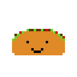
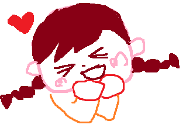

Where To Find Me
If you want to contact me, here are some ways to reach me!
Hi! I'm Susan.
I like to do so many things that I never know how to introduce myself. I love building on ideas, which has led me to consult for startups, learning how to build a video game, and embark on a months long journey to try starting a company. I'm in my best element when I'm uncomfortable. This means working on the unknown, challenging myself to get over fears, and finding the next point of improvement.
I am currently a enthusiast variety Twitch streamer, aspiring vocalist, and viewer of way too many cat videos. I don't stream very often and don't have a schedule, but am always appreciative when people stop by! Check out my channel here!
Those who know me, know I've attempted to learn how to code more than once. Each time, I felt a little more confident, but ultimately, life led be down another direction professionally. Every so often though, I'd think about wanting to give it another shot, but those feelings typically didn't last more than a day or two. A couple months ago, those thoughts came back. Not expecting to commit, I figured I'd get over these feelings after going through a tutorial or two online. However, those couple tutorials turned into much more this time. Now, I am (slowly) starting the design of a new game, working on adding new features to a chat bot for my Twitch channel, and will be starting classes soon! AH!
I love to travel! Even though I haven't been able to go anywhere for the last year+ due to the pandemic, I have been to Costa Rica, Norway, Italy, France, Canada, Taiwan, and in many cities across the US. Once life settles down, I'm hoping to go to Japan and Korea with friends.
I also play a lot of video games, but don't expect me to play any horror games! I don't like being scared. When I'm physically with friends, I enjoy playing board games, trying new restaurants, going out for karaoke, and running around a convention.
I also love to sing. Thankfully, I live alone so I won't annoy any roommates with my constant singing! I aim to start auditioning for local musical theatre in the fall.
Probably art and design. The game I've been working on is inspired by Rogue Heroes: Ruins of Tasos, mainly because I found it amusing that most of my friends read it as Ruins of Tacos. However, the extent of my current artistic ability is pretty bad pixel art and scribbles on Paint.

I also have no sense of how to make things look pretty and I've found that adding color makes everything worse for me so I want to change that as well.
My professional life is about as varied as my personal life. I have experience in teaching and tutoring, project management, sales, and relationship management. I love collaborating with different departments to create solutions, connecting people together, and doing any task, small or large, to get a project rolling. I easily get fired up when talking about the work I've done, so feel free to ask any questions!
Since the pandemic began, I've mostly focused on freelance work and preparing for a career change into tech.
Grab a copy of my resume: here
If you want to contact me, here are some ways to reach me!